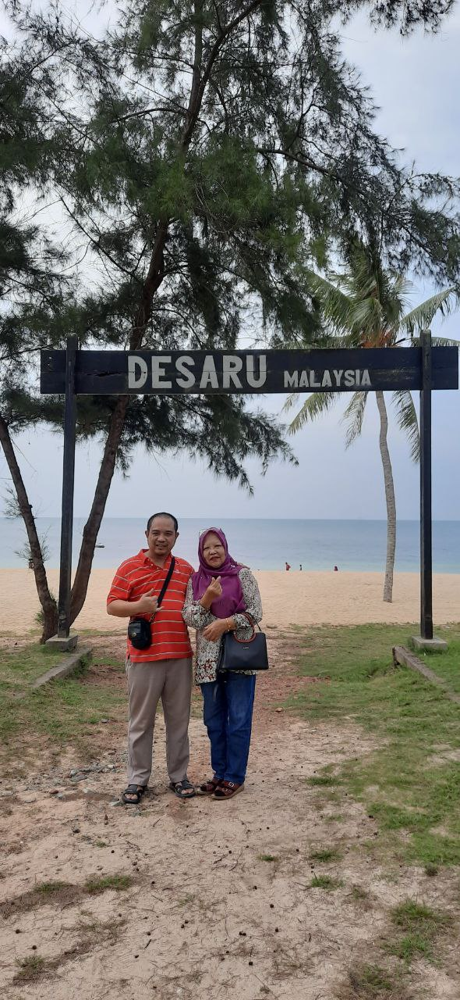
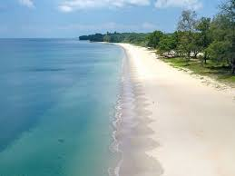

MY PICTURE IN DESARU
A last month ago I visited Desaru beach with my mom and enjoying the view and scenery here. It was a perfect sunny morning when I set out to visit Desaru Beach in Kota Tinggi, Johor, Malaysia. The drive from Johor Bahru was scenic, with coastal views and lush greenery making the journey pleasant and relaxing. As I neared Desaru, the salty sea breeze and distant sound of waves crashing against the shore grew stronger, building my anticipation.
Arriving at Desaru Beach, I was greeted by the sight of its expansive golden sands and crystal-clear waters stretching out to meet the horizon. The beach was lively, with families setting up picnics, children running around, and groups of friends playing beach volleyball. I found a perfect spot under a tall, swaying palm tree and laid down my beach mat, ready to bask in the sun.
Desaru was much hyped in the 80s with quite a few mega projects aimed at attracting foreign investment and visitors, which have since been abandoned.
Today, it's strictly a local affair with the occasional Singaporeans thrown in: there are no chic boutiques, fancy restaurants or hip nightlife spots,just 22 kilometers of beach and a few aging resorts.
After a period of neglect, recently Desaru has become popular with tourists wishing to see a true Malay resort without for-tourists frills, and pundits have been predicting a renaissance since the much-delayed expressway from Johor Bahru opened in 2011. Desaru Coast is the first premium integrated destination resort with projects taken off with the opening of The Els Club Champion golf course, Waterpark Adventure, Riverside & 4 five star hotels due to open in 2019 - The Westin , Hard Rock Hotel , One & Only & Anantara Resort & Villas.
